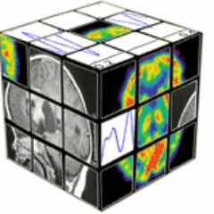
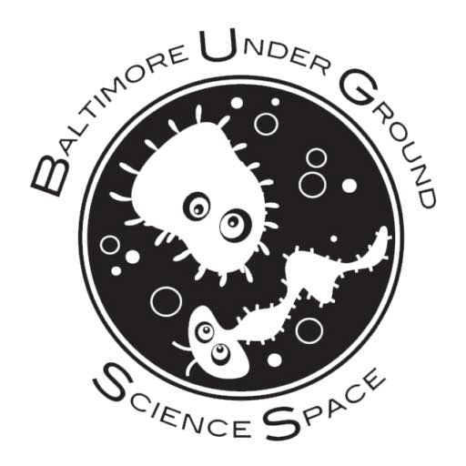
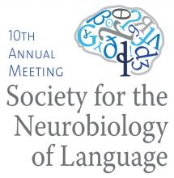
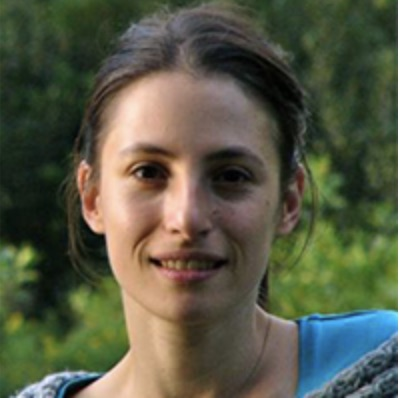
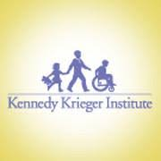
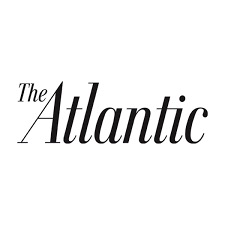
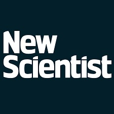
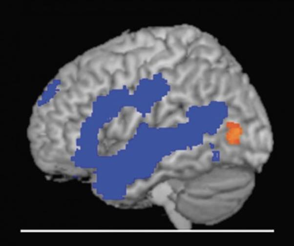

Lab in the News
-
 June 2019: September 2016: Lab's work is featured on JHU Hub
June 2019: September 2016: Lab's work is featured on JHU Hub
- March 2019: Shipra is awarded a post-doctoral fellowship from the Cognitive Neuroscience Society 
-  January 2019: Lisa is awarded second place at Science Slam, a speaker series for science outreach hosted by Project Bridge
-
November 2018: Brianna wins the Provost's Undergraduate Research Award (PURA) from JHU
-  August 2018: Giulia wins another Travel Award from the Society for the Neurobiology of Language
-
July 2018: Judy is awarded William Orr Dingwall Dissertation Fellowship from Dingwall Foundation
-
 July 2018: Lisa is awarded a fellowship to attend the Kavli Summer Institute in Cognitive Neuroscience in Lake Tahoe, CA
July 2018: Lisa is awarded a fellowship to attend the Kavli Summer Institute in Cognitive Neuroscience in Lake Tahoe, CA
- November 2017: Giulia wins a Travel Award from the Society for the Neurobiology of Language
- October 2017: Giulia wins the Diversity Travel Award from the Cognitive Developmental Society
-
July 2017: Giulia wins the Waldrop Junior Investigator's Award
-  July 2017: Dr. Marina Bedny wins the Johns Hopkins Catalyst Award!
- January 2017: Dr. Marina Bedny interviewed by Natalie Shaheen for Kennedy Krieger 
-  September 2016: Lab's work on visual cortex plasticity for mathematical functions in congenital blindness featured in The Atlantic
- September 2016: Lab's work featured on NPR
-  September 2016: PNAS paper featured on New Scientist
-
July 2016: Judy Kim is awarded Walker L. Clark Teaching Award from JHU
- November 2015: Judy Kim is awarded Graduate Student Abstract Merit Award from Society for Neurobiology of Language
- August 2015: Lab's work on plasticity in language networks in congenital blindness featured in The Guardian
-  August 2015: Lab featured in the JHU Hub
- August 2015: Dr. Bedny's work featured in Discover magazine
{kind=link}
{kind=link}
{kind=link}
{kind=link}
{kind=link}
{kind=link}
{kind=link}
{kind=link}
{kind=link}
{kind=link}
{kind=link}
{kind=link}